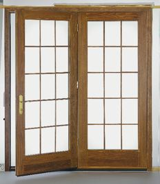
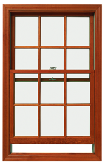

Windows & Doors
We work with the best brand name doors and windows on the market. The windows and doors in your home are one of the most important design considerations; both in terms of appearance and efficiency. We will help you design an effective and efficient window and door layout that works with your lifestlye and budget.
Windows & Patio Doors by PELLA®
We work directly with PELLA to get you the best windows and doors at the best price. We have an extencive working relationship with PELLA and can offer you more customised options and window designs because of this relationship. Visit the
PELLA website for more info.
 
Skylights by VELUX®
When it comes to skylights Velux is the best option. For more information visit the VELUX website.
Exterior Doors by THERMA-TRU®
The most popular exterior doors that we packages with our log homes are Therma-Tru doors. Offered in both a Premium Steel and Fiber Calsic insilated series. For more info visit the THERMA-TRU website.